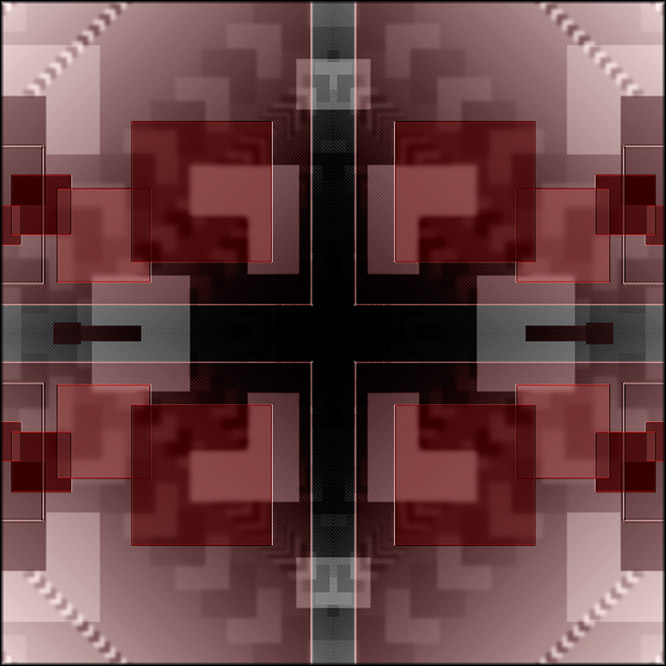

Inscription Ordinale #95908
Cette inscription marque un jalon personnel et historique.
L'Ordinal #95908 a été créé pendant la phase exploratoire la plus précoce des Bitcoin Ordinals, avant l'existence de conventions, de collections à grande échelle ou de récits établis. À ce moment, inscrire sur Bitcoin n'était pas encore une pratique standardisée, mais une question ouverte : Bitcoin pourrait-il servir non seulement comme un registre de valeur, mais aussi comme un moyen d'inscription culturelle ?
Cette pièce est un fragment d'une œuvre qui existait précédemment sur la chaîne de blocs Tezos. Son inscription sur Bitcoin ne représente ni duplication ni migration à des fins commerciales, mais un acte délibéré de continuité entre chaînes. Elle relie deux moments de l'histoire de l'art cryptographique : la culture expérimentale et dirigée par la communauté de Tezos et l'émergence de Bitcoin comme un espace pour l'inscription à long terme.
Être parmi les inscriptions inférieures à 100k situe ce Ordinal dans une période précanonique, quand les créateurs ne suivaient pas les règles, mais les définissaient activement. En ce sens, sa pertinence réside moins dans son apparence que dans son contexte temporel.
Cette inscription n'est pas à vendre. Sa valeur n'est pas transactionnelle, mais historique et personnelle. Elle fonctionne comme une trace : un enregistrement de présence, d'auteur et de participation au moment où Bitcoin a commencé à être exploré comme une archive culturelle.